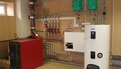
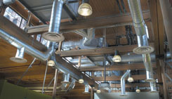
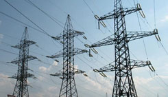
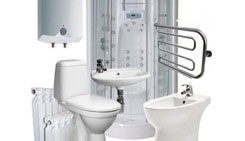
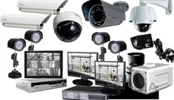

Инженерные сети.

Котельные и системы отопления
Наша компания предоставляет весь спектр услуг по проектированию, установке и сервисному обслуживанию котельных и отопительных систем для помещений любого профиля: производственных, складских, торговых, жилых домов и прочих. Мы производим проектирование и монтаж систем отопления любого типа: автономных и централизованных; воздушных, водяных, паровых или инфракрасных; созданных с применением различных типов котлов: газовых, тведотопливных, жидкотопливных, электрических.
В перечень монтажных работ систем отопления входят:
Грамотный расчет, качественный монтаж систем отопления, ответственное сервисное обслуживание гарантируют бесперебойную работу оборудования в течение длительного времени, использование устройств с оптимальными параметрами, безопасность и надежность приборов, создание оптимального микроклимата в помещении, снижение теплопотерь, экономичность и экологичность оборудования.

Вентиляция и кондиционирование
Монтаж климатических систем производится на основании данных о кубатуре обслуживаемых помещений, геометрии и требований, описанных в соответствующих СНиПах
Порядок проведения работ по обустройству вентиляции и систем кондиционирования:

Электроснабжение
В проектах электроснабжения предусматриваются две системы распределения электроэнергии: основная (рабочая) и аварийная. В случае перебоя в электроснабжении по постоянной схеме предусматривается подключение резервного источника электропитания в виде дизель-, газо-, бензогенератора или инвертора.
В целях электробезопасности электроснабжения предусматривается безопасное низкое напряжение (12 В) цепей управления осветительными приборами, устройства защитного отключения (контроль токов утечки), системы заземления (проектируются трехпроводные и пятипроводные электрические цепи), автоматические выключатели.
Материалы для проектирования систем электроснабженя:
Проект системы электроснабжения включает:
Расчетная часть проекта электроснабжения включает:
Графическая часть проекта электроснабжения состоит из поэтажных планов с нанесенными на них элементами системы электроснабжения:

Водопровод и канализация
Осуществляется полный комплекс работ по проектированию, монтажу и ремонту наружных сетей водоснабжения , водопроводов из чугунных (ВЧШГ), стальных и пластиковых труб (ПНД), а также из пластиковых труб с греющим кабелем (ИЗОПРОФЛЕКС - АРКТИК)
Согласование проекта, включает:
Предлагаем полный комплекс работ по монтажу наружных сетей водоснабжения , систем водопровода и сдачи эксплуатирующей организации, включающий в себя:
Производим полный комплекс работ по разработке проектной документации.
Подготовка и согласование Задания на Проектирование:
Сбор исходной документации для проектирования:

Слаботочные системы
Работы по установке слаботочных систем проводят после окончания отделочных работ.
Планируя монтаж слаботочных систем необходимо разработать – проект слаботочки. С грамотным размещением таких узлов как: слаботочный щит (слаботочный щиток), слаботочные реле, слаботочные розетки и т.д. А так же необходимо с предельной аккуратностью провести слаботочный провод по специальным стоякам.
В качестве основного элемента слаботочных систем выступают структурированные кабельные системы (СКС). Они представляют собой встроенную иерархическую кабельную систему, которая разделена на структурные подсистемы и включает в себя кросс-панели, оптические и медные изделия, информационные розетки, соединительные компоненты и вспомогательное оснащение.
Типы проектируемых слаботочных систем и услуги:
Умный дом
Умный дом – это уникальное жилье, позволяющее сделать жизнь человека более комфортной и безопасной. Умным домом называют систему автоматического управления различным оборудованием и системами коммуникации. Основной задачей умного дома можно назвать комплексное обеспечение комфортного времяпровождения для каждого обитателя здания. Эксклюзивная система способна регулировать температуру, влажность воздуха и освещенность помещений.
Одной из важнейших задач подобного комплекса является экономия ресурсов и безопасность. Система настроена на автоматическое реагирование в случае пожара или потопа. Также достоинством умного дома является возможность дистанционного управления и контроля. Владельцу жилья достаточно одного лишь доступа в интернет из любой точки земного шара, чтобы регулировать работу оборудования в собственной квартире.